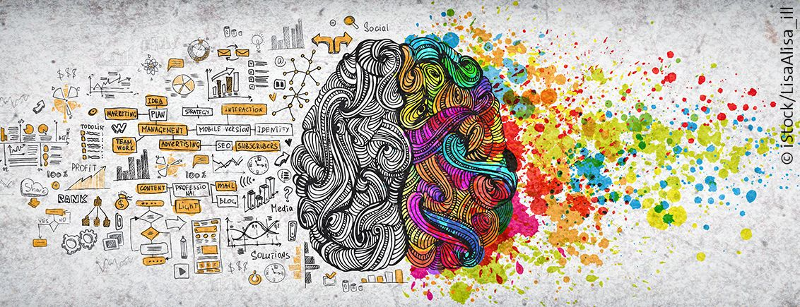

Hello, my full legal name is Abdulahi Busari but I go by Abdul. is simpler and people have been calling me Abdul since I was a kid. I was born in Lagos, Nigeria. I moved to Winnipeg, Manitoba in July 2011. In the last 10 years, I have lived in Winnipeg and I have lived in 4 houses. The home I lived in the longest was in a community called Windsor Park, where I attended Frontenac school from grades 2 to 7. I then moved to South Pointe and attended Ecole South Pointe School for one year before starting highschool.
(Picture with my siblings and I)
Growing up as a middle child, I had siblings older and younger than me which has allowed a variety of different relationships and dynamics to be produced in my household. I remember that my older sister and I would often argue, so our relationship became quite strained. However, the older I got the more respect I gained for her and her work ethic. As a kid I was always told how efficient and smart she was. Although it put pressure on me, and I think it added some resentment, she is the reason I have tried to push myself in school. Wanting to follow in her footsteps is important to me, but I’d never tell her that. Now that she’s in Alberta studying her first year of physiology, I’m slowly realizing how important she is to me and how she truly shaped the way I grew up. Now that we have grown and matured, we are close and there we facetime at least 4 times a week even if it is about the most random things like whether a candy bar from the vending machine is worth spending two dollars.
(Picture of me playing football)
(Picture with my friends after getting first provincially in football)
I am a really social person, making new friends is one of my favourite things to do. Since I was a little kid making friends came really easy to me, which was a nice skill to have as a child. That skill also comes in handy now in my everyday life. I have a lot of hobbies. I love playing football and basketball, I also love cooking. I can spend hours on hours in the kitchen just baking and cooking, it’s one of the places I’m happiest in, eating the food is a plus too lol.
I chose software development because I felt it would let me explore my more creative side. There is such a wide range when you talk about software development, from building games to websites. I felt it was the best option where I could hone my technical skills while yet having fun and being me. That is just a little bit of information about me, so you can get to know and understand me better. Contact me if you are interested in working together!
